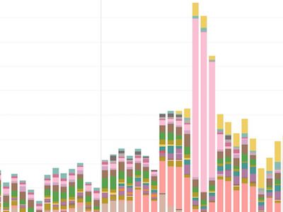
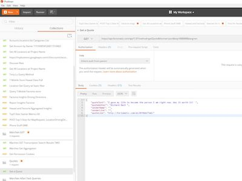
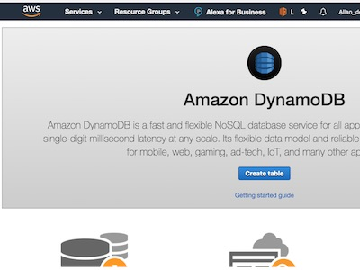

Product and execution
Translate ambiguous business needs into roadmaps, user stories, demos, and delivery rhythms that keep teams aligned.
I am Allan Yeung, a builder working across product, data, cloud platforms, and automation. I like practical tools, clear dashboards, reliable workflows, and technology that helps teams make better decisions faster.
Translate ambiguous business needs into roadmaps, user stories, demos, and delivery rhythms that keep teams aligned.
Shape SQL, dashboards, and operating metrics that make performance easier to see and act on.
Use APIs, scripting, cloud services, and workflow tools to reduce repetitive work and tighten feedback loops.

Turning scattered data sources into useful reporting for product, ecommerce, and operations teams.

Exploring APIs, JSON payloads, and automation patterns that connect services without unnecessary manual steps.

Experimenting with cloud platforms, developer tools, and repeatable ways to learn by building.
This site started as a General Assembly front-end web development project. I am keeping that version available as a snapshot of an earlier chapter.